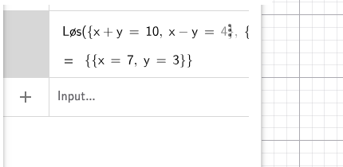

En ligning er som en vægtskål. Det du gør på den ene side, skal du gøre på den anden: så er den stadig i balance.
Mål: få x til at stå alene på den ene side.
Brug "modsatte" regnetegn for at flytte ting væk fra x:
Løs: 2x + 6 = 14
Træk 6 fra på begge sider:
2x = 8
Dividér med 2 på begge sider:
x = 4
Tjek: 2·4 + 6 = 14 ✓
Løs: 5x − 4 = 2x + 11
Træk 2x fra på begge sider:
3x − 4 = 11
Læg 4 til:
3x = 15
Dividér med 3:
x = 5
Når en opgave har to ubekendte (fx x og y), skal du have to ligninger.
Den nemme måde: brug GeoGebra:
I hånden: isolér x i den ene ligning, sæt det ind i den anden.

En ulighed bruger <, >, ≤ eller ≥ i stedet for lighedstegn.
Du løser den næsten som en ligning: med én undtagelse:
Løs: 3x + 5 < 17
Træk 5 fra:
3x < 12
Dividér med 3:
x < 4
Med negativt tal:
−2x > 8
Dividér med −2 (vend tegnet!):
x < −4